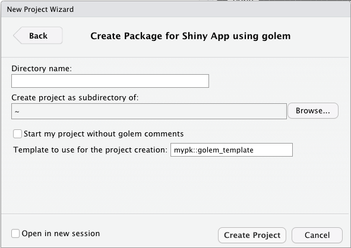

About {golem} 0.3.1

The new version of {golem} (0.3.1) have been available on CRAN 🎉 for about a month now.
This new version includes a lot of new things, but we notably focused on working on two important new features: allowing you to extend {golem} via templates, and supporting for the latest changes in {shiny}.
Extending {golem}
One of the challenges when it comes to building apps in a production context is that you might be repeating some patterns over and over again: adding the same CSS in every app, creating specific functions, setting a license, adding internal packages as dependencies, etc.
The key idea with {golem} is to lower the number of repetitive tasks you have to perform during the engineering of your app.
We try to achieve that by providing tools that automate these common tasks.
But before version 0.3, there was no way to optimize the “business specific”, internal tasks of adding files, functions, or templating modules.
This is now possible with this new release of {golem}, which introduces the concept of “golem templates”: functions that can be used for project hooks, module templates, and JavaScript and CSS file creation.
Project Hooks
About project hooks
A project hook is a functions called inside create_golem().
It allows you to define custom behaviors when creating {golem} based apps, and can be used for:
- Adding a different front-end template in
R/app_ui.R - Changing configuration options in
inst/golem-config.yml - Copying external files in
inst/app/www - Removing a file from the default template
- etc.
This function is called just after the default project has been created, and is executed in the directory of the created package.
Here is a step by step of what happens when a project is created with {golem}:
- The package name is generated
- The directory that will receive the package is created
- Default
{golem}template is copied to this directory - R moves to the newly created project, and runs the
project_hookfunction - R moves back to the previous directory
- If in RStudio, the project is open
The project_hook function takes three mandatory parameters, which are passed from create_golem:
path: the full path of the directorypackage_name: the name of the package...: further arguments that can be passed fromcreate_golem()when called from the command line
These parameters might not be used inside your own hook, but they need to be set in the hook function skeleton for compatibility reasons.
The best way to extend {golem} via a project hook is by defining a project_hook function in an external package.
This will allow this function to be used inside the {golem} creation RStudio project creation widget:

Project hook example
Removing the dev folder:
no_dev <- function(path, package_name, ...){
fs::dir_delete("dev")
}
create_golem("ici", project_hook = no_dev)
Create a CSS:
new_css <- function(path, package_name, ...){
css_path <- fs::path_abs("inst/app/www/custom.css")
fs::file_create(css_path)
write_there <- function(...){
write(..., file = css_path, append = TRUE)
}
write_there("body {")
write_there(" background-color:red;")
write_there("}")
cli::cat_bullet("CSS generated")
}
create_golem("ici", project_hook = new_css)
Module templates
About module templates
Module templates are called inside add_module.
It allows you to extend {golem} module template functionality by creating your own content inside the module file.
The function is called after the file(s) creation.
Here is a step by step of what happens when the add_module function is called:
- The module name is generated, and the
R/directory is created if needed - The fct_ and utils_ files are created if needed
- The path to the module is generated
- If the file already exists, it opens the file
- If the file doesn't exist, R creates the file and the
module_templatefunction is called - File is potentially open
(Note that the template function is not called if the file already exists).
Module template functions will receive, by default, the following parameters from add_modules().
name: the name of the modulepath: the path to the file in R/export: a TRUE/FALSE set by theexportparam ofadd_module()...further arguments
These parameters might not be used inside your own function, but they need to be set in the function skeleton, for compatibility reasons.
Module template examples
my_tmpl <- function(name, path, export, ...){
# Define a template that write to the
# module file
write(name, path)
}
golem::add_module(name = "custom", module_template = my_tmpl)
my_other_tmpl <- function(name, path, export, ...){
# Copy and paste a file from somewhere
file.copy(..., path)
}
golem::add_module(name = "custom", module_template = my_other_tmpl)
JS & CSS templates
About JS & CSS templates
JavaScript and CSS templates work the same way as the module templates, and are used during the creation of JavaScript files, JavaScript handlers and CSS files, i.e. inside add_js_file(), add_js_handler() and add_css_file().
The function is called after the file creation. Here is a step by step of what happens when these functions are called:
- Name is created
- The path is generated
- If the file already exists, it opens the file
- If the file doesn't exist, R creates it and the
templatefunction is called - File is potentially open
(Note that the template function is not called if the file already exists).
You can then define your own function inside your {golem} based application, but chances are you will be defining them into your own package.
File template functions will receive, by default, the following parameters from the add_*() function.
path: the path to the file...further arguments
These parameters might not be used inside your own function, but they need to be set in the function skeleton, for compatibility reasons.
JS & CSS templates examples
my_tmpl <- function(path, ...){
# Define a template that only write the name of the
# module in the file
write_there <- function(...){
write(..., file = path, append = TRUE)
}
write_there("body {")
write_there(" background-color:red;")
write_there("}")
}
golem::add_css_file(name = "custom", template = my_tmpl)
Support for the latest {shiny} features
New module skeleton
{shiny} 1.5.0, has introduced a new skeleton when it comes to modules.
{golem} now supports this new skeleton:
> golem::add_module("plop")
✓ File created at R/mod_plop.R
#' plop UI Function
#'
#' @description A shiny Module.
#'
#' @param id,input,output,session Internal parameters for {shiny}.
#'
#' @noRd
#'
#' @importFrom shiny NS tagList
mod_plop_ui <- function(id){
ns <- NS(id)
tagList(
)
}
#' plop Server Functions
#'
#' @noRd
mod_plop_server <- function(id){
moduleServer( id, function(input, output, session){
ns <- session$ns
})
}
## To be copied in the UI
# mod_plop_ui("plop_ui_1")
## To be copied in the server
# mod_plop_server("plop_ui_1")
Disabling auto-load
Since {shiny} 1.5.0, the R folder is automatically sourced, in alphabetical order, when the app is loaded via runApp()—this used to be opt-in but is now opt-out.
This can cause some troubles with {golem} package structure in some (rare) cases, and only when deploying to RStudio platform via golem::add_rstudioconnect_file() and friends—there is no issue with the package structure and the load whenever you load golem via the golem::run_dev() or via myapp::run_app().
This behavior can be opt-out via two mechanisms: options(shiny.autoload.r=FALSE), or via a file called _disable_autoload.R in the R/ folder.
Reliably setting options in all projects can create some issues, so we have chosen to go for the _disable_autoload.R solution.
This file is now created whenever you called one of golem::add_rstudioconnect_file(), golem::add_shinyappsio_file() or golem::add_shinyserver_file().
You can also force its creation via golem::disable_autoload().
Important note. This will still print a warning to your console:
Warning in loadSupport(appDir, renv = sharedEnv, globalrenv = NULL) :
Loading R/ subdirectory for Shiny application, but this directory appears to contain an R package. Sourcing files in R/ may cause unexpected behavior.
This is unfortunately because, at the time of writing these lines, {shiny} doesn't remove this warning when the _disable_autoload.R file is there, so this warning will be printed to your logs.
You can safely ignore it for now, as long as this behavior does not change (if it ever changes) in the {shiny} package.
There is an issue open on the {shiny} repo right now, so feel free to watch the progress there!
Misc
Here are a selection of changes and new features in this new version:
-
You no longer need to source the
dev/run_dev.Rscript and can call thegolem::run_dev()function from your console. -
add_html_template()creates an empty HTML template inside your app. -
golem::add_js_bindingandgolem::add_js_output_bindingcreate a skeleton for JavaScript bindings. -
use_external_file,use_external_css_file,use_external_js_file, anduse_external_html_templatedownload external files from URL and add them to thewwwfolder. They all have ause_internal_counterpart that copies files from the local computer. -
The
sanity_check()function does a series of checks inside the current project.
Soft deprecation
We're planning on deprecating the add_ui_server_files() function.
Feel free to comment on ThinkR-open/golem/issues/445 if you'd like it to stay there.
Updating your old projects
If you've built a project with an older version of {golem}, there should be no re-engineering to do, everything should still be compatible.
One change though might be in the way you deploy your app on RStudio platforms, which is related to the way {shiny} now handles the package structure.
Just run golem::disable_autoload() to add the support.
If ever you find any other issues with the new version of {golem}, please feel free to open an issue on the repository.
Feedback and questions
We're always happy to get new ideas and question on {golem}!
If you have a feature idea, or find a bug, please open an issue.
The best places to ask question are either the GitHub “Discussions” panel, or StackOverflow, using the golem tag.
Thanks
We want to thank all the people who have contributed to this version, either by opening PR, feature requests, or bug report.
@abidawson, @abnercasallo, @aftonsteps, @AMillanFL, @antoine-sachet, @ArthurPERE, @artpulsion, @cderv, @chintanp, @ChrisBeeley, @CorradoLanera, @csgillespie, @daattali, @DivadNojnarg, @durandsinclair, @dwhdai, @dylanrussellmd, @earnaud, @fBedecarrats, @feddelegrand7, @fizic37, @fvitalini, @gacolitti, @genobobeno, @hadley, @HanjoStudy, @henrique1008, @jacksonschan, @jacobwindsor, @jaybee84, @jcrodriguez1989, @jennahamlin, @julianstanley, @KasperThystrup, @Kastakin, @KoderKow, @kprimice, @mahelious, @MayaGans, @mcsiple, @michaelhogersnplm, @moodymudskipper, @mraess, @novica, @nvelden, @quickbendelat, @rgaube, @riccardoporreca, @RichardPilbery, @robertoromor, @seanhardison1, @ShinyFabio, @sjspielman, @Swechhya, @TimotheeTournier, @VincentAlcazer, @Welsh44, @yogat3ch, @yonicd, @zchmielewska, and @ZimmermannYves.